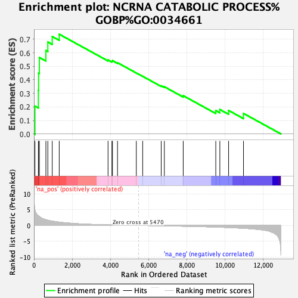
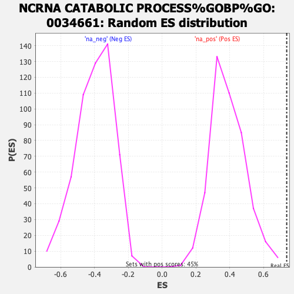

| | | Dataset | ER_ranked_genelist |
| Phenotype | NoPhenotypeAvailable |
| Upregulated in class | na_pos |
| GeneSet | NCRNA CATABOLIC PROCESS%GOBP%GO:0034661 |
| Enrichment Score (ES) | 0.7375212 |
| Normalized Enrichment Score (NES) | 1.8977647 |
| Nominal p-value | 0.0 |
| FDR q-value | 0.31521377 |
| FWER p-Value | 0.529 |
Table: GSEA Results Summary

Fig 1: Enrichment plot: NCRNA CATABOLIC PROCESS%GOBP%GO:0034661
Profile of the Running ES Score & Positions of GeneSet Members on the Rank Ordered List

Fig 2: NCRNA CATABOLIC PROCESS%GOBP%GO:0034661: Random ES distribution
Gene set null distribution of ES for NCRNA CATABOLIC PROCESS%GOBP%GO:0034661